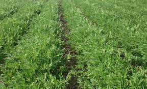
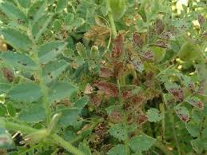
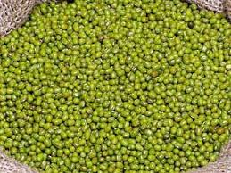

Mwongozo Kamili wa Kilimo Bora cha Dengu Kitaalamu

1. Idara ya Maandalizi ya Shamba na Udongo
Dengu hupandwa mara baada ya msimu wa mvua za vuli au masika kuisha, zikitumia unyevu uliosalia ardhini.
- Hali ya Udongo: Dengu hukua vizuri kwenye udongo mzito wa mfinyanzi (black cotton soil / clay loam) uliopo mabondeni kwa sababu una uwezo mkubwa wa kuhifadhi unyevu kwa muda mrefu wa kiangazi. Udongo uwe na mifereji mizuri ili kuzuia maji kutuama wakati wa mvua za mwisho.
- Ulimaji: Shamba lilimwe mapema kabla udongo haujakauka na kuwa mgumu sana ili kutengeneza mazingira laini ya mbegu kuota kirahisi.
2. Idara ya Upandaji na Vipimo vya Nafasi
Upandaji wa dengu unahitaji nafasi ya karibu zaidi ukilinganisha na maharagwe ya kawaida ili mimea ifunike udongo haraka na kuzuia unyevu usipotee hewani [1.3].
| Aina ya Dengu | Nafasi Kati ya Mstari na Mstari | Nafasi Kati ya Shimo na Shimo | Kina cha Kupanda |
|---|---|---|---|
| Aina Ndogo (Desi Type) | 30 Sentimita hadi 35 cm | 10 Sentimita (10 cm) | 4 cm hadi 5 cm (Mbegu 1 kwa shimo) |
| Aina Kubwa (Kabuli Type) | 40 Sentimita (40 cm) | 10 Sentimita (10 cm) | 4 cm hadi 5 cm |

📋 Ripoti ya Mahitaji
💵 Makadirio ya Kifedha ya Dengu
3. Idara ya Lishe na Uwekezaji wa Mbolea
Dengu hufanya mchakato wa *Biological Nitrogen Fixation* (kujitengenezea Nitrojeni kutoka hewani kupitia mizizi), hivyo haihitaji mbolea za kukuzia [1.3].
Mbolea ya Kupandia (Fosfari)
Weka **kilo 50 za DAP kwa ekari moja** wakati wa kupanda ili kusaidia mizizi kukua kwa kasi na kufikia unyevu wa chini ardhini haraka [1.3]. Mbolea isigusane moja kwa moja na mbegu ili kuzuia kuungua kwa kimea.
4. Idara ya Mbegu: Aina za Mbegu Bora Tanzania
Taasisi ya **TARI** imesajili mbegu bora za dengu zinazofaa kwa mazingira yetu na soko la kimataifa:
- Desi Type (Dengu Ndogo): Zina rangi ya kahawia au kijani giza. Zinafaa sana kwa soko la ndani na zinastahimili magonjwa kirahisi. Zinakomaa ndani ya siku 90-100.
- Kabuli Type (Dengu Kubwa): Zina rangi ya cream au nyeupe na punje zake ni kubwa sana. Zina soko kubwa sana la nje (export) na bei yake ni ya juu sana ukilinganisha na aina nyingine.
- Mwangaza: Moja ya mbegu zilizoboreshwa na TARI yenye uwezo wa kutoa mavuno mengi hata kukiwepo na unyevu kidogo ardhini.
5. Idara ya Ulinzi: Kudhibiti Magugu na Viwavi
Dengu ni zao fupi linaloweza kuzidiwa nguvu na magugu mapema wiki za kwanza baada ya kuota.
Kudhibiti Wadudu (Changamoto Kuu)
Kiwavi wa Maganda (Pod Borer - Helicoverpa armigera): Huyu ndiye adui namba moja wa dengu. Anashambulia maua na kutoboa maganda machanga kula punje ndani [1.3]. Udhibiti: Nyunyizia viuatilifu ( insecticides) zilizopendekezwa kitaalamu mara mbili; kwanza wakati mmea unapoanza kutoa maua, na pili wakati maganda yanapoanza kutengenezwa [1.3].
Magonjwa ya Mnyauko
Mnyauko wa Ukungu (Fusarium Wilt): Unasababisha mmea kunyauka na kukauka ghafla ukiwa shambani kwa sababu ukungu unaziba mishipa ya maji kwenye mizizi. Udhibiti: Panda mbegu bora zilizosajiliwa na uepuke kupanda dengu kwenye shamba lilelile kila mwaka (Zingatia crop rotation) [1.3].

6. Idara ya Uvunaji na Uhifadhi
Vuna dengu pale ambapo asilimia 80-90 ya majani na maganda yamekauka kabisa na kugeuka rangi ya manjano au kahawia.
- Kuvuna na Kupura: Ng'oa mimea na uianike kwenye maturubai kwa siku 3-4. Pura kwa kupiga kwa fimbo laini kisha upepete vizuri kupata dengu safi.
- Uhifadhi Salama: Kausha vizuri hadi unyevu ufikie chini ya **12%**. Hifadhi kwenye mifuko ya kisasa (Hermetic bags kama PICS) ili kuzuia wadudu wa ghalani wasiharibu dengu yako bila kulazimika kuweka madawa ya unga [1.3].
